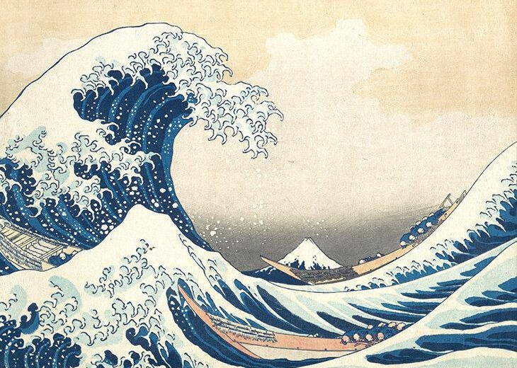
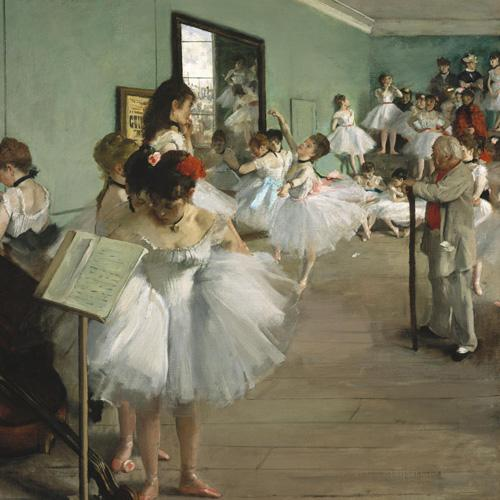
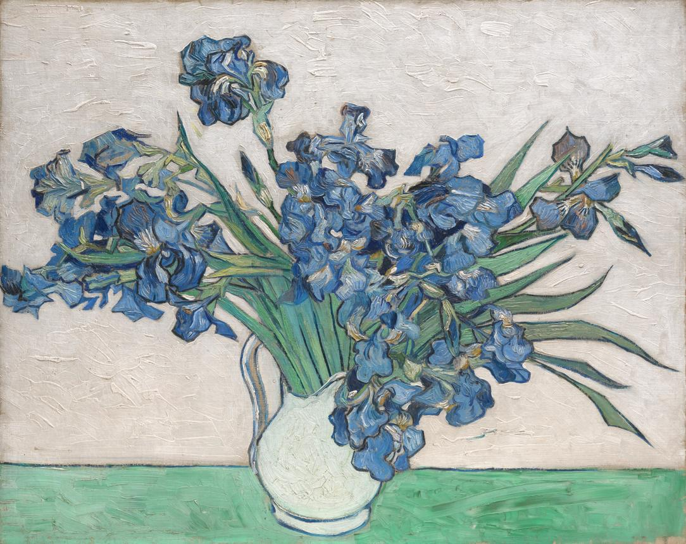
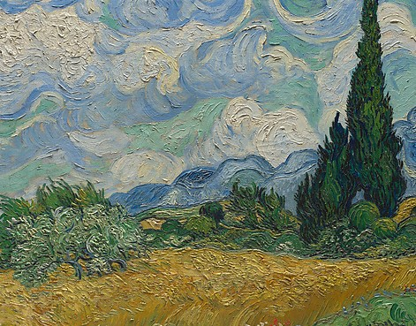

Imagens para reconhecer
Abra a câmera da galeria no celular e aponte para uma destas imagens. Mantenha a imagem inteira visível. Você também pode abrir o JPEG em tela cheia ou imprimi-lo.
A Grande Onda
Abrir imagem
A Aula de Dança
Abrir imagem
Íris
Abrir imagem
Campo de Trigo com Ciprestes
Abrir imagem